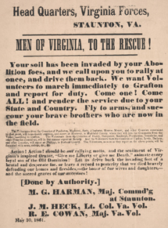

| Michael G. Harman owned and operated a stage line and hotel in Staunton, Augusta County,
Virginia. During the war, he served in the 52nd Virginia Infantry, eventually attaining the
rank of colonel. After the war, the Harman family remained in Staunton. |
|
the most likely matches in the Valley of the Shadow databases: |
Harman Family: 1860 Census | 1870 Census | Military Service
In this collection of seven letters, Michael G. Harman describes his operations as commanding officer in Staunton in the last half of 1861.
Michael G. Harman, as the major commanding at Staunton, posted broadsides encouraging Virginians to volunteer to form a military company to drive back the invading northerners. The broadsides appealed to Virginians' patriotism and masculinity.
Return to the War Years Personal Papers